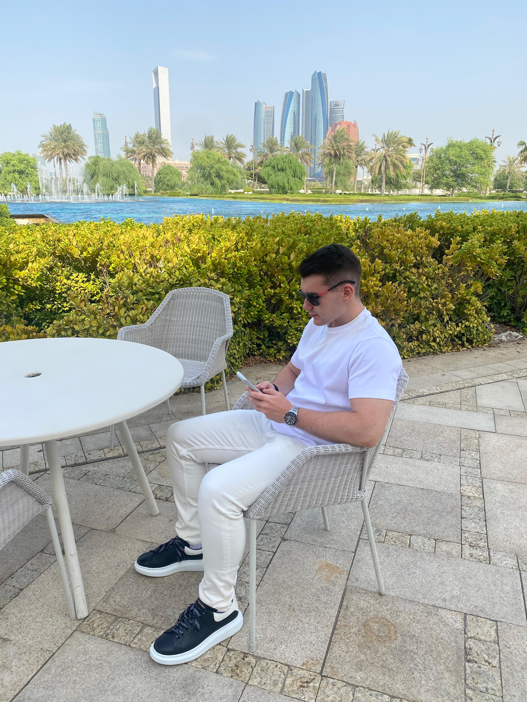
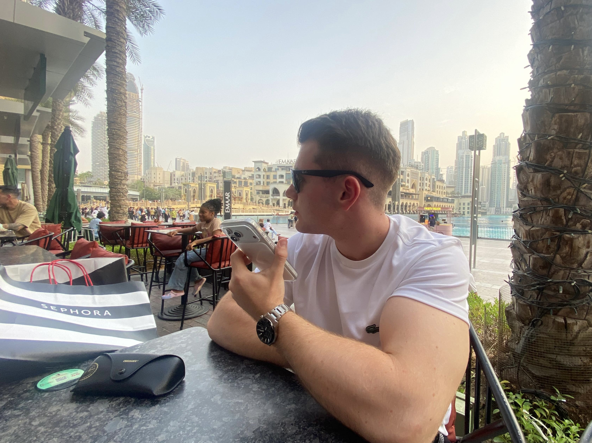

What is FroFit about ?
At FroFit, we believe that achieving lasting fitness results requires more than generic workout routines and one-size-fits-all nutrition plans. Our mission is to provide personalized fitness solutions that empower individuals to reach their health and wellness goals with confidence. Our platform offers carefully designed fitness packages tailored to the unique needs, objectives, and lifestyle of each client. Every package includes a personalized training program and a customized nutrition plan, created to maximize progress while promoting sustainable and healthy habits. Whether your goal is weight loss, muscle growth, improved athletic performance, or simply a healthier lifestyle, FroFit provides the guidance and structure you need to succeed. By combining expert knowledge with a personalized approach, we ensure that every client receives a plan specifically designed to support their journey. At FroFit, we are committed to making professional fitness coaching more accessible, effective, and results-driven. Your goals become our priority, and we are dedicated to helping you build a stronger, healthier, and more confident version of yourself. Join FroFit today and take the first step toward achieving your full potential through personalized fitness and nutrition.


Meet the founder
Mihnea Fronie
I first got into fitness at the age of 15. Since then, I've been learning everything about training, nutrition and body recomposition, and applying it to myself, learning how to take care of my body in a healthy and sustainable way. FroFit was born from that passion: I want to take everything I've learned over the years and help as many people as possible reach the results they're looking for.